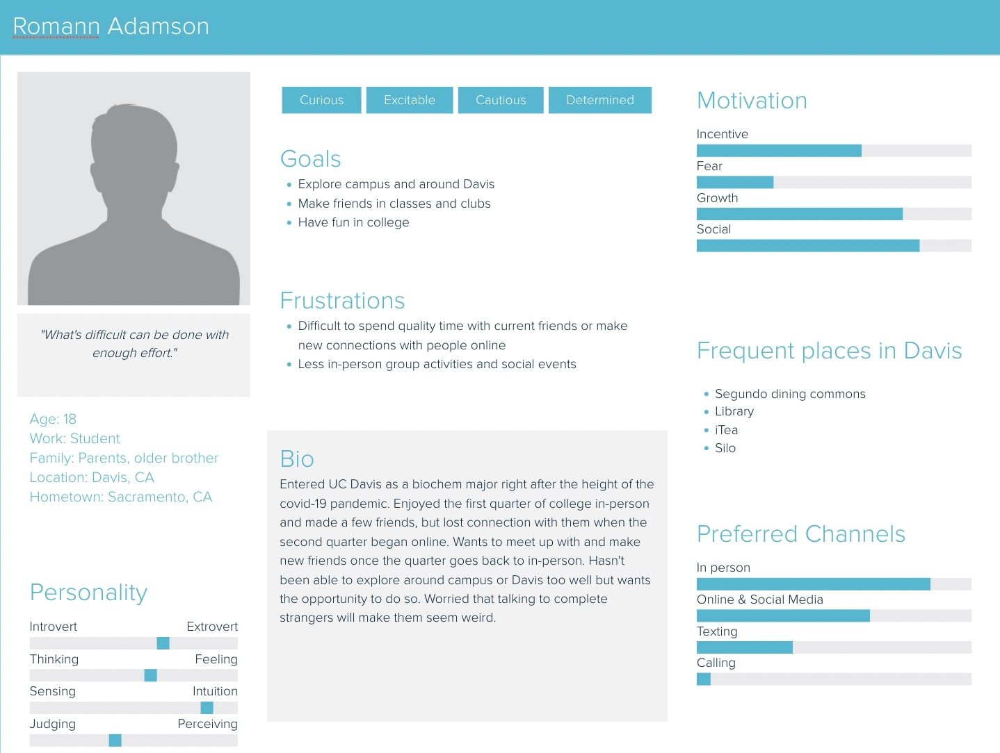
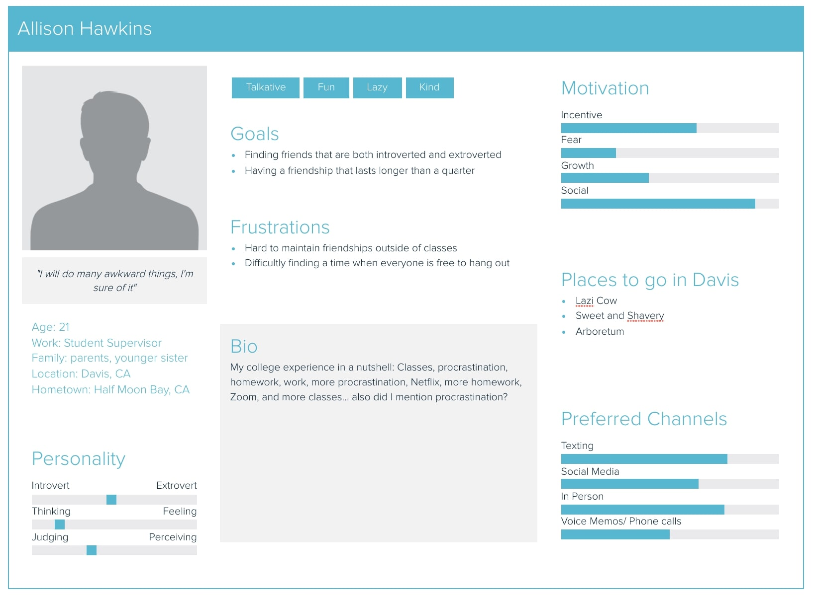
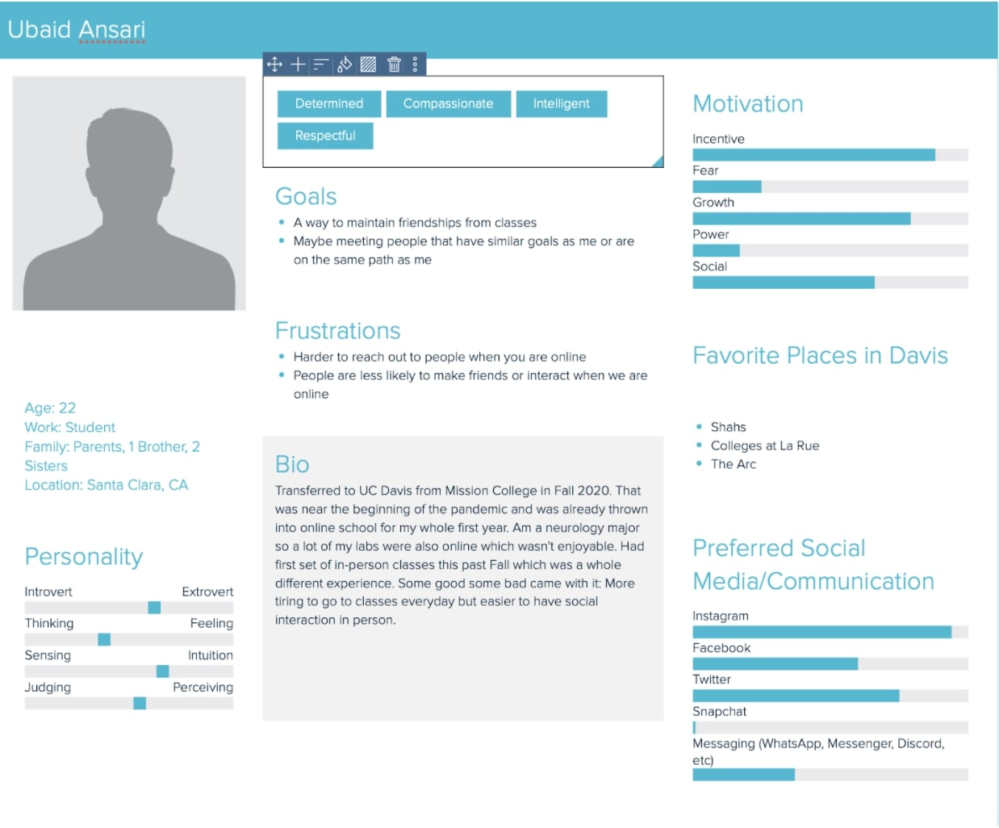
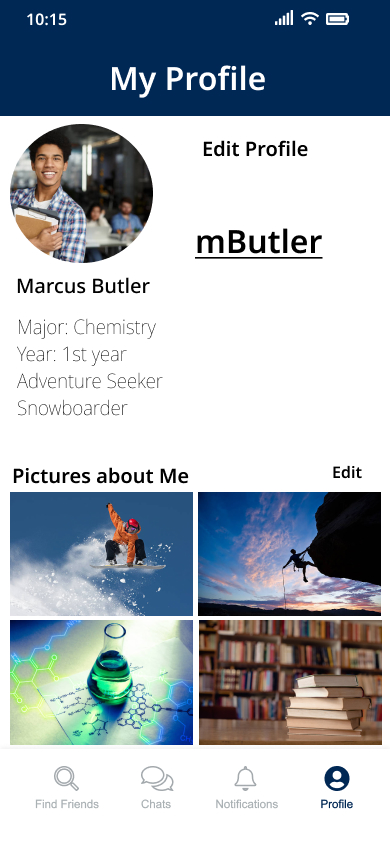

Jenny
ConnectMe
Figma
UX / UI
2022
Background
ConnectMe is a UI design project I worked on as a group in my human-computer interaction class. The purpose was to design a social app for UC Davis students to be able to find friends and connect with other people of similar interests because we recognized from personal experiences or online forums that many students find social connections to be challenging due to the COVID pandemic and limited in-person interaction. My role in this project was to focus on designing the task to demonstrate how a user would interact with new friends through our app.
Proposal
In this project proposal, we discuss the problem at hand, the background and significance, the benefits of addressing the problem, the requirements, solutions and reasons, requirements, and our milestones.
Progress
In this progress report, we update our project description, discuss the HCI design process we used: empathize, define, ideate, and prototype, and our tentative plans.
Survey Data Collection
User Personas
  User Flows and Wireframes
Prototype
There are 4 different tasks that we demonstrate: creating an account, adding additional information to a profile, finding friends based on filters and match percentage, and interactions with new friends. I worked on the 4th task: interactions with new friends.
Task 1: Creating An Account
Task 2: Adding Additional Information To A Profile
Task 3: Finding Friends Based on Filters and Match Percentage
Task 4: Interactions with New Friends
Final Report
In this final report, we compose an abstract, introduction, background, conceptual model, prototype and implementation: low and high fidelity, user testing, discussion, and future works.
Conclusion
Through this project, I was able to continue utilizing Figma: practicing what I know and learning new things like setting flows properly in the prototype mode. Working as a group has also allowed me to experience the collaboration and communication needed to develop a consistent and well designed product.